Changes in PRIMAP-hist v2.5.1_final compared to v2.5_final for Bhutan
2024-02-29
Johannes Gütschow
Change analysis for Bhutan for PRIMAP-hist v2.5.1_final compared to v2.5_final
Overview over emissions by sector and gas
The following figures show the aggregate national total emissions excluding LULUCF AR6GWP100 for the country reported priority scenario. The dotted linesshow the v2.5_final data.
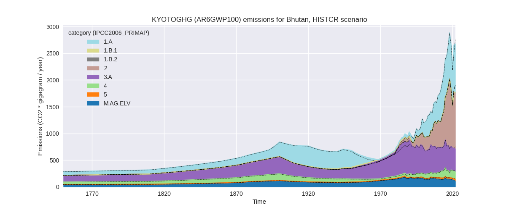
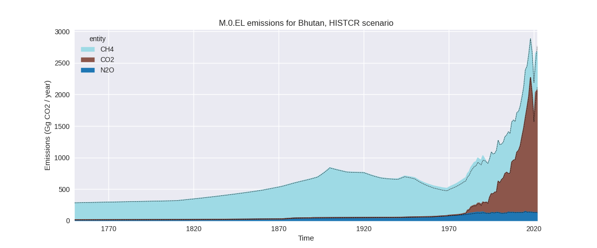
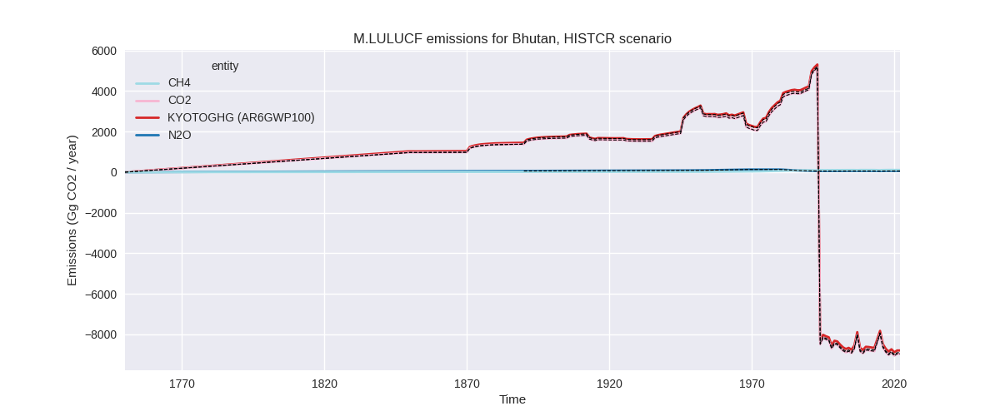
The following figures show the aggregate national total emissions excluding LULUCF AR6GWP100 for the third party priority scenario. The dotted linesshow the v2.5_final data.

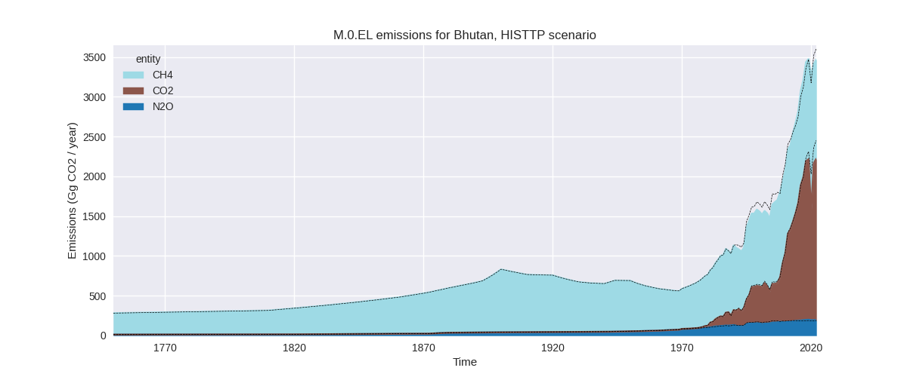
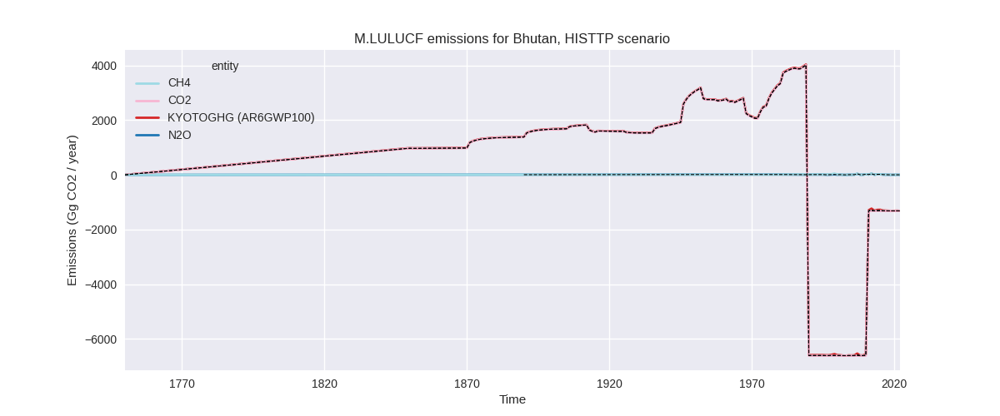
Overview over changes
In the country reported priority scenario we have the following changes for aggregate Kyoto GHG and national total emissions excluding LULUCF (M.0.EL):
- Emissions in 2022 have changed by -3.1%% (-85.26 Gg CO2 / year)
- Emissions in 1990-2022 have changed by 0.2%% (2.69 Gg CO2 / year)
In the third party priority scenario we have the following changes for aggregate Kyoto GHG and national total emissions excluding LULUCF (M.0.EL):
- Emissions in 2022 have changed by -3.9%% (-139.97 Gg CO2 / year)
- Emissions in 1990-2022 have changed by -2.3%% (-48.91 Gg CO2 / year)
Most important changes per scenario and time frame
In the country reported priority scenario the following sector-gas combinations have the highest absolute impact on national total KyotoGHG (AR6GWP100) emissions in 2022 (top 5):
- 1: 2, CO2 with -94.82 Gg CO2 / year (-8.3%)
- 2: 1.A, CO2 with 53.39 Gg CO2 / year (6.3%)
- 3: M.AG.ELV, CH4 with -17.34 Gg CO2 / year (-30.4%)
- 4: 3.A, CH4 with -9.65 Gg CO2 / year (-2.3%)
- 5: 4, CH4 with -6.48 Gg CO2 / year (-4.3%)
In the country reported priority scenario the following sector-gas combinations have the highest absolute impact on national total KyotoGHG (AR6GWP100) emissions in 1990-2022 (top 5):
- 1: 1.A, CO2 with 7.57 Gg CO2 / year (1.9%)
- 2: 2, CO2 with -6.62 Gg CO2 / year (-1.4%)
- 3: 3.A, CH4 with 2.54 Gg CO2 / year (0.5%)
- 4: M.AG.ELV, CH4 with -0.71 Gg CO2 / year (-1.1%)
- 5: M.AG.ELV, N2O with 0.42 Gg CO2 / year (0.5%)
In the third party priority scenario the following sector-gas combinations have the highest absolute impact on national total KyotoGHG (AR6GWP100) emissions in 2022 (top 5):
- 1: 1.A, CO2 with -145.35 Gg CO2 / year (-12.3%)
- 2: 2, CO2 with -107.91 Gg CO2 / year (-10.0%)
- 3: 3.A, CH4 with 59.04 Gg CO2 / year (16.0%)
- 4: 1.A, CH4 with 50.04 Gg CO2 / year (12.0%)
- 5: 1.B.1, CO2 with 15.50 Gg CO2 / year (471.1%)
In the third party priority scenario the following sector-gas combinations have the highest absolute impact on national total KyotoGHG (AR6GWP100) emissions in 1990-2022 (top 5):
- 1: 3.A, CH4 with -36.03 Gg CO2 / year (-8.1%)
- 2: 1.A, CO2 with -21.59 Gg CO2 / year (-4.6%)
- 3: 1.B.1, CH4 with 16.03 Gg CO2 / year (35.8%)
- 4: 1.A, CH4 with 15.82 Gg CO2 / year (4.9%)
- 5: 2, CO2 with -15.09 Gg CO2 / year (-3.6%)
Notes on data changes
Here we list notes explaining important emissions changes for the country. ’' means that the following text only applies to the TP time series, while means that it only applies to the CR scenario. Otherwise the note applies to both scenarios.
- 1.A, CO2: The new CDIAC data shows a decline in emissions in 2020 (consistent with the country reported data) leading to lower post 2020 emissions in PRIMAP-hist v2.5.1. The new CDIAC data influences the growth rates of the last two years which are not covered by country reported data leading to lower 2022 emissions.
- 2.C, CO2: EDGAR 8.0 shows lower emissions for 2.C (metal industry) in recent years leading to lower 2022 emissions and slightly lower cumulative emissions.
- 2, CO2: EDGAR 8.0 shows lower emissions for 2.C (metal industry) in recent years leading to lower 2022 emissions and slightly lower cumulative emissions.
- 3.A, CH4: FAO emissions are different starting in 1990 leading to lower cumulative emissions and higher 2022 emissions.
Changes by sector and gas
For each scenario and time frame the changes are displayed for all individual sectors and all individual gases. In the sector plot we use aggregate Kyoto GHGs in AR6GWP100. In the gas plot we usenational total emissions without LULUCF. ## country reported scenario
2022
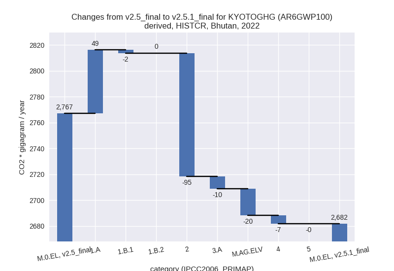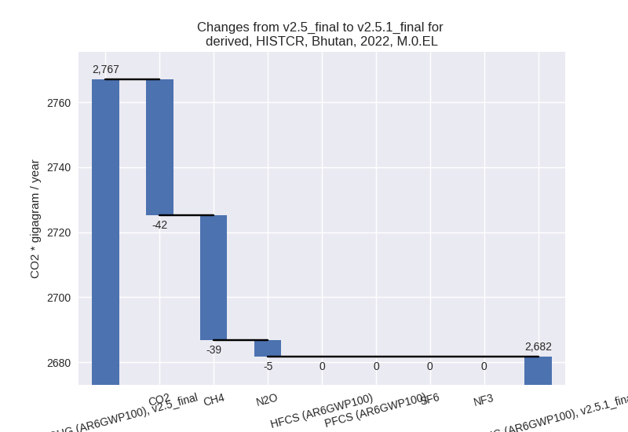
1990-2022
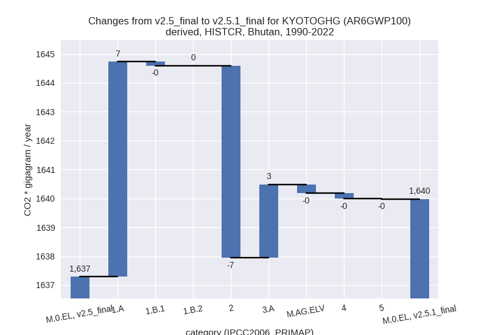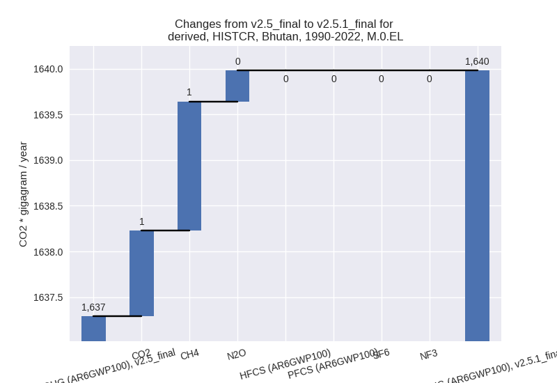
third party scenario
2022
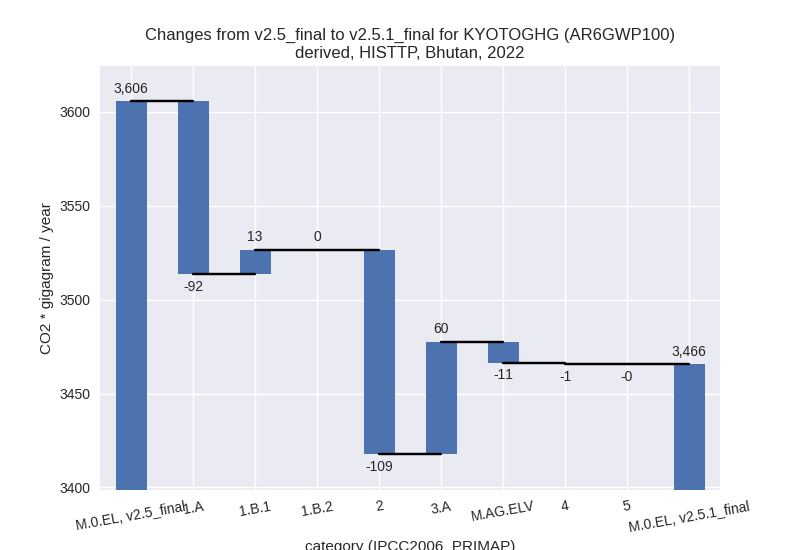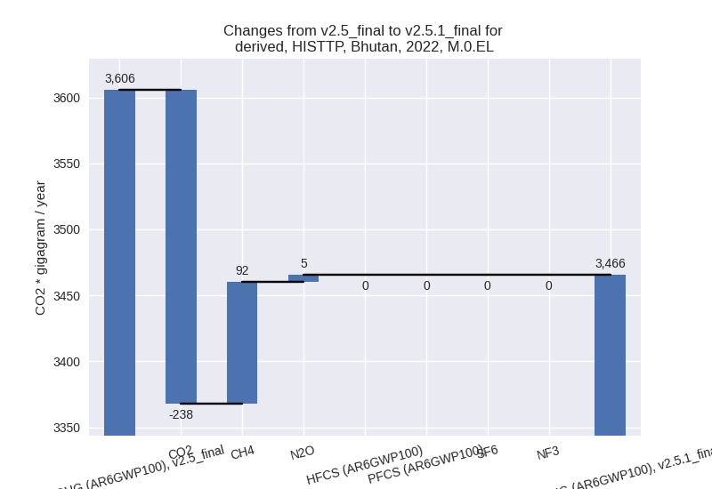
1990-2022
 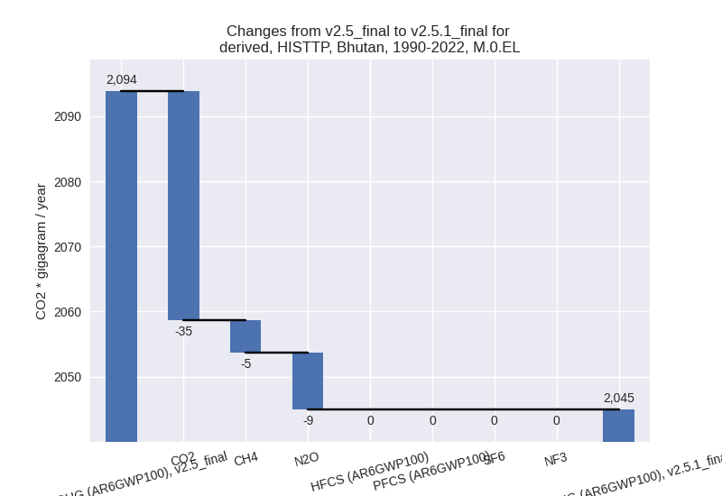
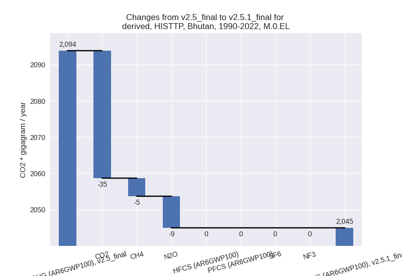
Detailed changes for the scenarios:
country reported scenario (HISTCR):
Most important changes per time frame
For 2022 the following sector-gas combinations have the highest absolute impact on national total KyotoGHG (AR6GWP100) emissions in 2022 (top 5):
- 1: 2, CO2 with -94.82 Gg CO2 / year (-8.3%)
- 2: 1.A, CO2 with 53.39 Gg CO2 / year (6.3%)
- 3: M.AG.ELV, CH4 with -17.34 Gg CO2 / year (-30.4%)
- 4: 3.A, CH4 with -9.65 Gg CO2 / year (-2.3%)
- 5: 4, CH4 with -6.48 Gg CO2 / year (-4.3%)
For 1990-2022 the following sector-gas combinations have the highest absolute impact on national total KyotoGHG (AR6GWP100) emissions in 1990-2022 (top 5):
- 1: 1.A, CO2 with 7.57 Gg CO2 / year (1.9%)
- 2: 2, CO2 with -6.62 Gg CO2 / year (-1.4%)
- 3: 3.A, CH4 with 2.54 Gg CO2 / year (0.5%)
- 4: M.AG.ELV, CH4 with -0.71 Gg CO2 / year (-1.1%)
- 5: M.AG.ELV, N2O with 0.42 Gg CO2 / year (0.5%)
Changes in the main sectors for aggregate KyotoGHG (AR6GWP100) are
- 1: Total sectoral emissions in 2022 are 911.02 Gg
CO2 / year which is 34.0% of M.0.EL emissions. 2022 Emissions have
changed by 5.4% (46.75 Gg CO2 /
year). 1990-2022 Emissions have changed by 1.8% (7.31 Gg CO2 / year). For 2022 the
changes per gas
are:
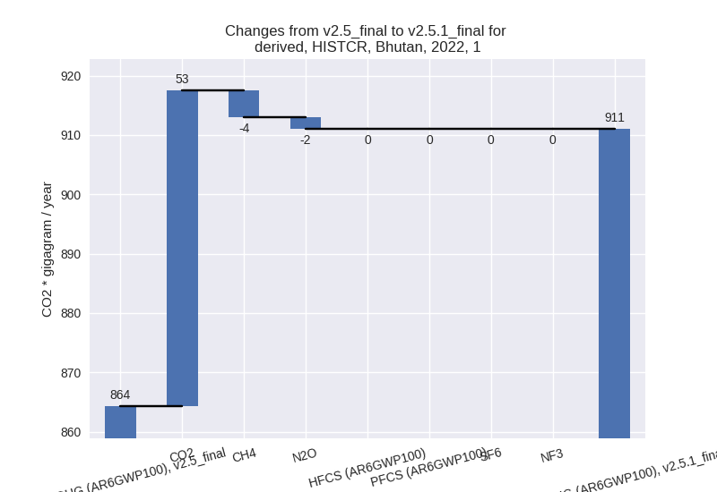
The changes come from the following subsectors:- 1.A: Total sectoral emissions in 2022 are 910.19 Gg
CO2 / year which is 99.9% of category 1 emissions. 2022 Emissions have
changed by 5.7% (49.16 Gg CO2 /
year). 1990-2022 Emissions have changed by 1.8% (7.44 Gg CO2 / year). For 2022 the
changes per gas
are:
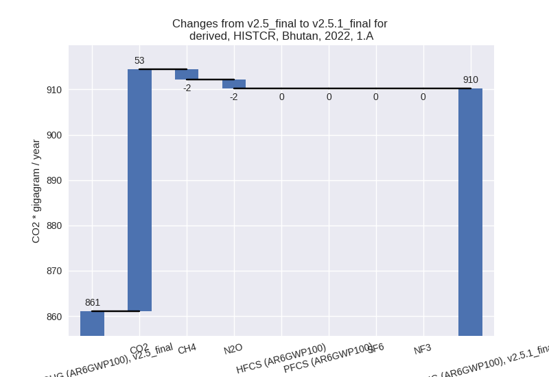
There is no subsector information available in PRIMAP-hist. - 1.B.1: Total sectoral emissions in 2022 are 0.82 Gg
CO2 / year which is 0.1% of category 1 emissions. 2022 Emissions have
changed by -74.5% (-2.41 Gg CO2 /
year). 1990-2022 Emissions have changed by -8.4% (-0.13 Gg CO2 / year). For 2022 the
changes per gas
are:
For 1990-2022 the changes per gas are:
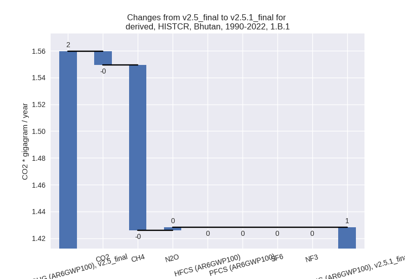
There is no subsector information available in PRIMAP-hist. - 1.B.2: Total sectoral emissions in 2022 are 0.01 Gg
CO2 / year which is 0.0% of category 1 emissions. 2022 Emissions have
changed by 21.9% (0.00 Gg CO2 /
year). 1990-2022 Emissions have changed by 7.7% (0.00 Gg CO2 / year). For 2022 the
changes per gas
are:
For 1990-2022 the changes per gas are:
There is no subsector information available in PRIMAP-hist.
- 1.A: Total sectoral emissions in 2022 are 910.19 Gg
CO2 / year which is 99.9% of category 1 emissions. 2022 Emissions have
changed by 5.7% (49.16 Gg CO2 /
year). 1990-2022 Emissions have changed by 1.8% (7.44 Gg CO2 / year). For 2022 the
changes per gas
are:
- 2: Total sectoral emissions in 2022 are 1055.43 Gg
CO2 / year which is 39.4% of M.0.EL emissions. 2022 Emissions have
changed by -8.3% (-95.45 Gg CO2 /
year). 1990-2022 Emissions have changed by -1.4% (-6.65 Gg CO2 / year). For 2022 the
changes per gas
are:
- M.AG: Total sectoral emissions in 2022 are 534.01
Gg CO2 / year which is 19.9% of M.0.EL emissions. 2022 Emissions have
changed by -5.3% (-29.89 Gg CO2 /
year). 1990-2022 Emissions have changed by 0.4% (2.23 Gg CO2 / year). For 2022 the
changes per gas
are:
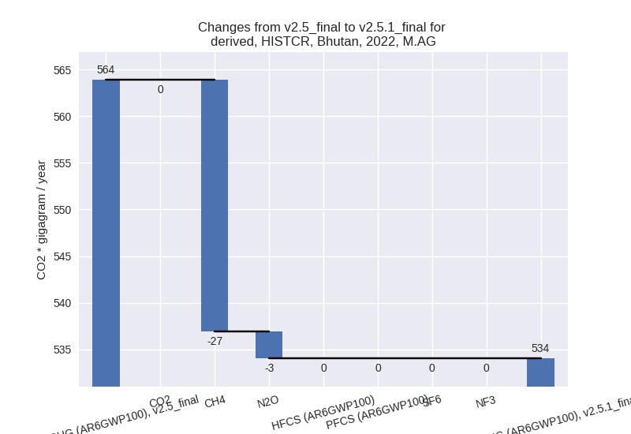
The changes come from the following subsectors:- 3.A: Total sectoral emissions in 2022 are 421.98 Gg
CO2 / year which is 79.0% of category M.AG emissions. 2022 Emissions
have changed by -2.2% (-9.57 Gg CO2
/ year). 1990-2022 Emissions have changed by 0.5% (2.53 Gg CO2 / year). For 2022 the
changes per gas
are:
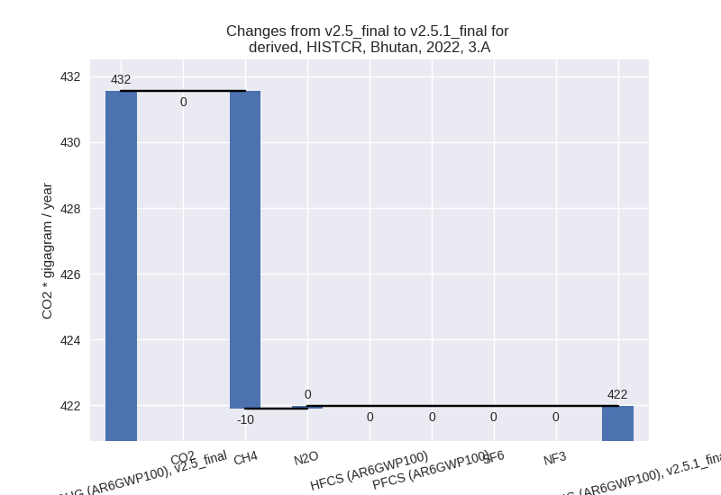
There is no subsector information available in PRIMAP-hist. - M.AG.ELV: Total sectoral emissions in 2022 are
112.04 Gg CO2 / year which is 21.0% of category M.AG emissions. 2022
Emissions have changed by -15.4%
(-20.32 Gg CO2 / year). 1990-2022 Emissions have changed by -0.2% (-0.30 Gg CO2 / year). For 2022 the
changes per gas
are:
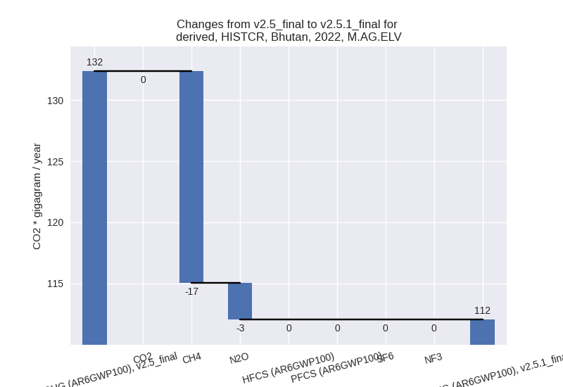
There is no subsector information available in PRIMAP-hist.
- 3.A: Total sectoral emissions in 2022 are 421.98 Gg
CO2 / year which is 79.0% of category M.AG emissions. 2022 Emissions
have changed by -2.2% (-9.57 Gg CO2
/ year). 1990-2022 Emissions have changed by 0.5% (2.53 Gg CO2 / year). For 2022 the
changes per gas
are:
- 4: Total sectoral emissions in 2022 are 148.65 Gg
CO2 / year which is 5.5% of M.0.EL emissions. 2022 Emissions have
changed by -4.2% (-6.52 Gg CO2 /
year). 1990-2022 Emissions have changed by -0.2% (-0.20 Gg CO2 / year). For 2022 the
changes per gas
are:
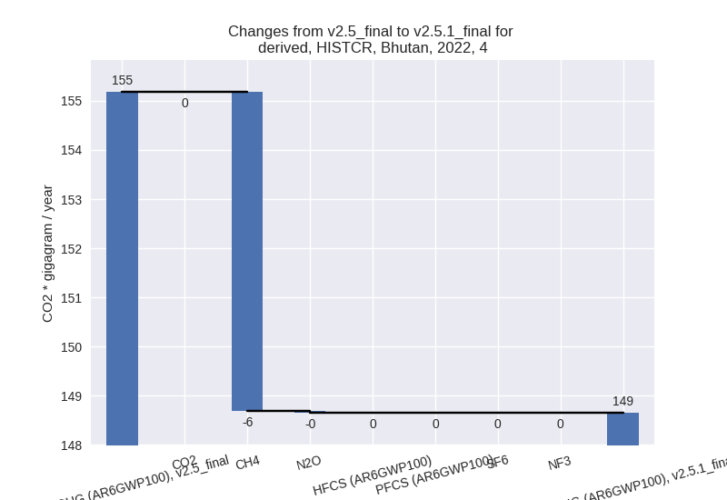 - 5: Total sectoral emissions in 2022 are 32.58 Gg CO2 / year which is 1.2% of M.0.EL emissions. 2022 Emissions have changed by -0.4% (-0.15 Gg CO2 / year). 1990-2022 Emissions have changed by -0.0% (-0.00 Gg CO2 / year).
third party scenario (HISTTP):
Most important changes per time frame
For 2022 the following sector-gas combinations have the highest absolute impact on national total KyotoGHG (AR6GWP100) emissions in 2022 (top 5):
- 1: 1.A, CO2 with -145.35 Gg CO2 / year (-12.3%)
- 2: 2, CO2 with -107.91 Gg CO2 / year (-10.0%)
- 3: 3.A, CH4 with 59.04 Gg CO2 / year (16.0%)
- 4: 1.A, CH4 with 50.04 Gg CO2 / year (12.0%)
- 5: 1.B.1, CO2 with 15.50 Gg CO2 / year (471.1%)
For 1990-2022 the following sector-gas combinations have the highest absolute impact on national total KyotoGHG (AR6GWP100) emissions in 1990-2022 (top 5):
- 1: 3.A, CH4 with -36.03 Gg CO2 / year (-8.1%)
- 2: 1.A, CO2 with -21.59 Gg CO2 / year (-4.6%)
- 3: 1.B.1, CH4 with 16.03 Gg CO2 / year (35.8%)
- 4: 1.A, CH4 with 15.82 Gg CO2 / year (4.9%)
- 5: 2, CO2 with -15.09 Gg CO2 / year (-3.6%)
Changes in the main sectors for aggregate KyotoGHG (AR6GWP100) are
- 1: Total sectoral emissions in 2022 are 1679.02 Gg
CO2 / year which is 48.4% of M.0.EL emissions. 2022 Emissions have
changed by -4.5% (-79.00 Gg CO2 /
year). 1990-2022 Emissions have changed by 1.6% (14.05 Gg CO2 / year). For 2022 the
changes per gas
are:
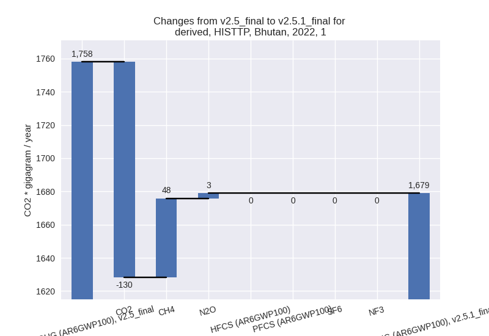
The changes come from the following subsectors:- 1.A: Total sectoral emissions in 2022 are 1568.85
Gg CO2 / year which is 93.4% of category 1 emissions. 2022 Emissions
have changed by -5.5% (-92.12 Gg CO2
/ year). 1990-2022 Emissions have changed by -0.4% (-3.44 Gg CO2 / year). For 2022 the
changes per gas
are:
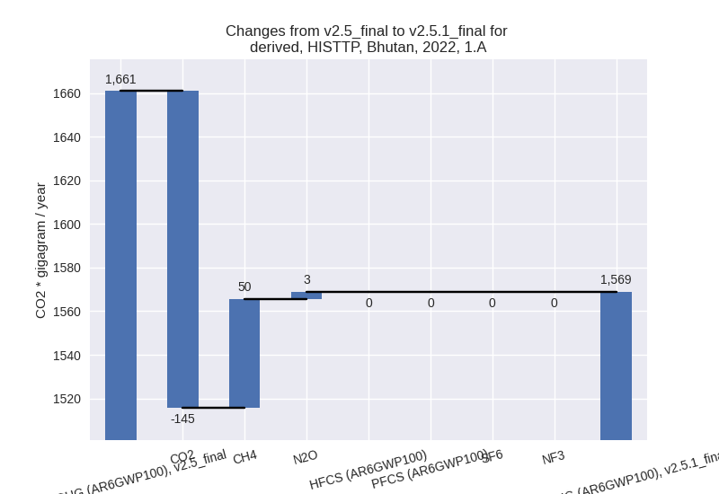
There is no subsector information available in PRIMAP-hist. - 1.B.1: Total sectoral emissions in 2022 are 110.16
Gg CO2 / year which is 6.6% of category 1 emissions. 2022 Emissions have
changed by 13.5% (13.12 Gg CO2 /
year). 1990-2022 Emissions have changed by 37.9% (17.49 Gg CO2 / year). For 2022 the
changes per gas
are:
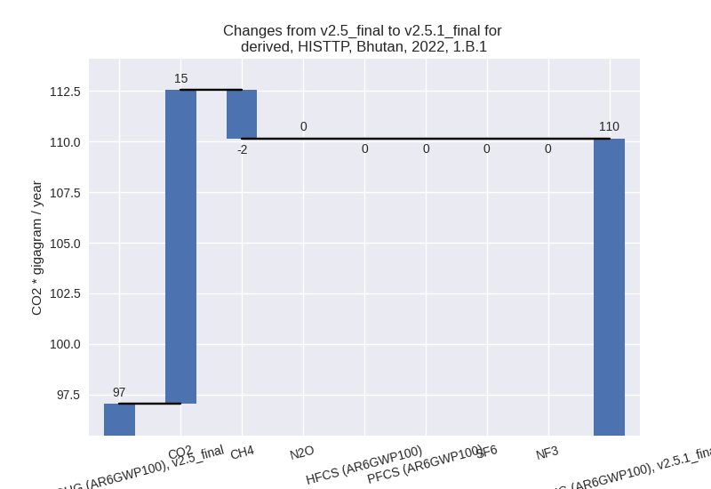
For 1990-2022 the changes per gas are:
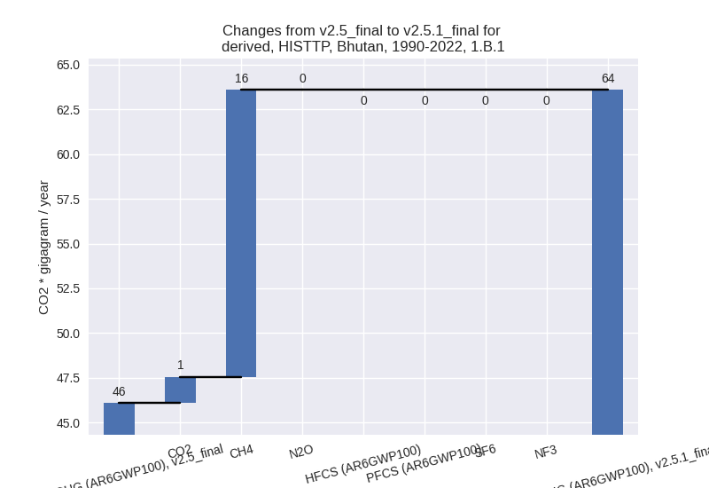
There is no subsector information available in PRIMAP-hist. - 1.B.2: Total sectoral emissions in 2022 are 0.01 Gg
CO2 / year which is 0.0% of category 1 emissions. 2022 Emissions have
changed by 21.9% (0.00 Gg CO2 /
year). 1990-2022 Emissions have changed by 7.7% (0.00 Gg CO2 / year). For 2022 the
changes per gas
are:
For 1990-2022 the changes per gas are:
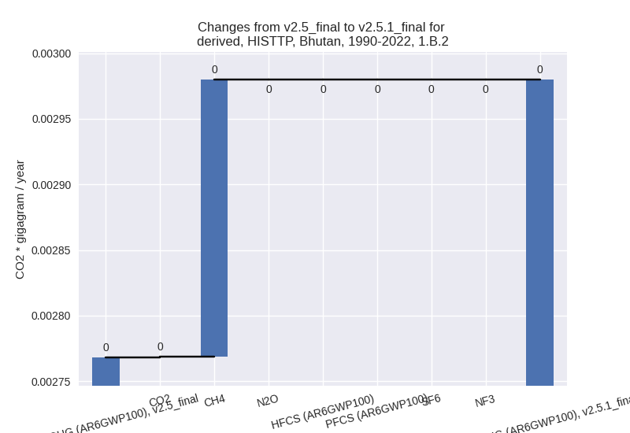
There is no subsector information available in PRIMAP-hist.
- 1.A: Total sectoral emissions in 2022 are 1568.85
Gg CO2 / year which is 93.4% of category 1 emissions. 2022 Emissions
have changed by -5.5% (-92.12 Gg CO2
/ year). 1990-2022 Emissions have changed by -0.4% (-3.44 Gg CO2 / year). For 2022 the
changes per gas
are:
- 2: Total sectoral emissions in 2022 are 984.33 Gg
CO2 / year which is 28.4% of M.0.EL emissions. 2022 Emissions have
changed by -10.0% (-108.83 Gg CO2 /
year). 1990-2022 Emissions have changed by -3.6% (-15.20 Gg CO2 / year). For 2022 the
changes per gas
are:

For 1990-2022 the changes per gas are:
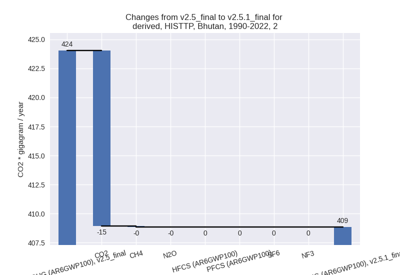 - M.AG: Total sectoral emissions in 2022 are 544.67
Gg CO2 / year which is 15.7% of M.0.EL emissions. 2022 Emissions have
changed by 9.8% (48.79 Gg CO2 /
year). 1990-2022 Emissions have changed by -7.7% (-47.73 Gg CO2 / year). For 2022 the
changes per gas
are:
For 1990-2022 the changes per gas are:
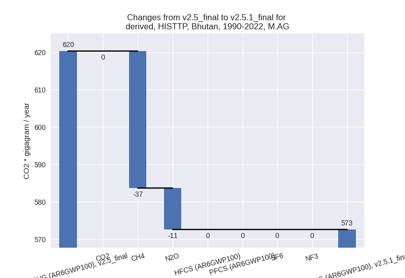
The changes come from the following subsectors:- 3.A: Total sectoral emissions in 2022 are 431.04 Gg
CO2 / year which is 79.1% of category M.AG emissions. 2022 Emissions
have changed by 16.2% (59.94 Gg CO2
/ year). 1990-2022 Emissions have changed by -7.9% (-35.63 Gg CO2 / year). For 2022 the
changes per gas
are:
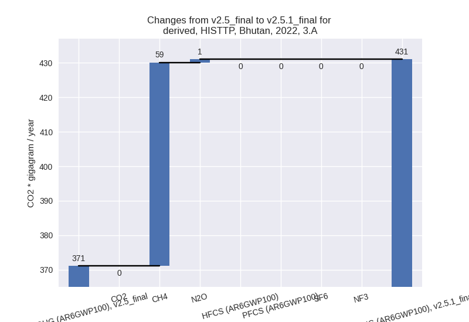
For 1990-2022 the changes per gas are:
There is no subsector information available in PRIMAP-hist. - M.AG.ELV: Total sectoral emissions in 2022 are
113.63 Gg CO2 / year which is 20.9% of category M.AG emissions. 2022
Emissions have changed by -8.9%
(-11.15 Gg CO2 / year). 1990-2022 Emissions have changed by -7.1% (-12.10 Gg CO2 / year). For 2022 the
changes per gas
are:
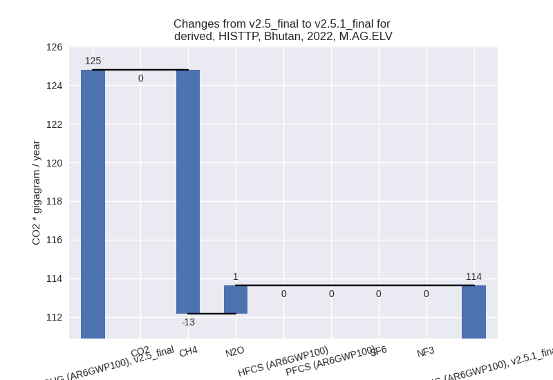
For 1990-2022 the changes per gas are:
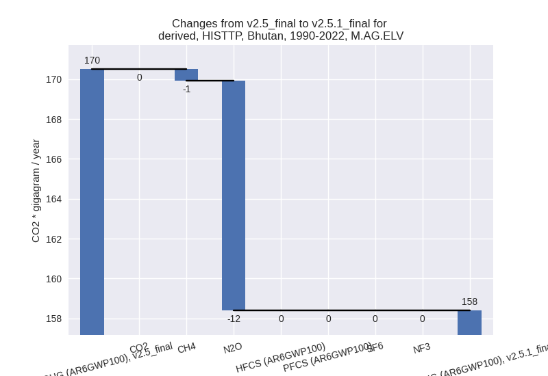
There is no subsector information available in PRIMAP-hist.
- 3.A: Total sectoral emissions in 2022 are 431.04 Gg
CO2 / year which is 79.1% of category M.AG emissions. 2022 Emissions
have changed by 16.2% (59.94 Gg CO2
/ year). 1990-2022 Emissions have changed by -7.9% (-35.63 Gg CO2 / year). For 2022 the
changes per gas
are:
- 4: Total sectoral emissions in 2022 are 224.96 Gg CO2 / year which is 6.5% of M.0.EL emissions. 2022 Emissions have changed by -0.3% (-0.79 Gg CO2 / year). 1990-2022 Emissions have changed by -0.0% (-0.03 Gg CO2 / year).
- 5: Total sectoral emissions in 2022 are 32.58 Gg CO2 / year which is 0.9% of M.0.EL emissions. 2022 Emissions have changed by -0.4% (-0.15 Gg CO2 / year). 1990-2022 Emissions have changed by -0.0% (-0.00 Gg CO2 / year).